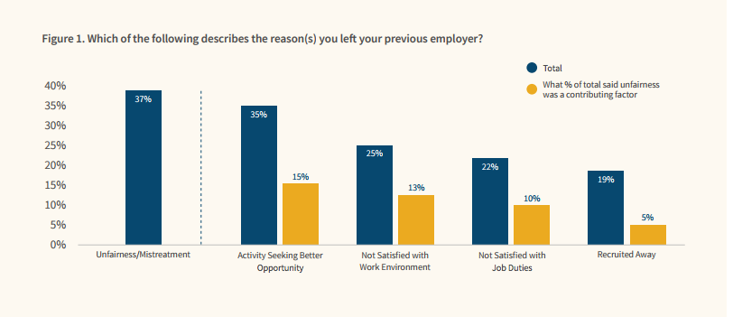

How Do We Shape Community?
Anna Neyzberg • @ANeyzb • anna@carbonfive.com
About me:
- I'm on of the ElixrBridge founders
- I almost went to medical school
- I am trying to get better at climbing rocks
What I want to talk about today?
Community
- Why is it important
- What to think about when creating community
- How to make it sustainable
Why is community important?

"We build better products with diverse teams"
photo credit: https://culclinc8.wordpress.com/2014/06/28/diverse-team-2/


credit: http://www.bbc.com/news/world-south-asia-12557384

Free basics was supposed to give internet access to people who couldn't afford it
Facebook got to choose what sites people could go to
Choice between no internet and free internet
- India's Railway site has 1.3 billion tickets booked per day
- Farmers access weather forecasts
- Women in remote villages get easy acess to feminie hygiene products
Free Basics was struck down by Indian court

"India’s rejection of Free Basics was as economically catastrophic to it as its independence from British colonisation." - Facebook Board Member
Free Basics was never a true philanthropic effort
Facebook did not understand the true needs of the people it was trying to reach
So Why am I explaining all this?
What if the team building free basics was more diverse
What id they had created a platform that India people could use to innovate and solve their own problems
"Promoting diversity means promoting understanding"
"This leads to better products that solve problems for those who might’ve otherwise been sidelined."

credit: http://www.talentinnovation.org/assets/IDMG-ExecSummFINAL-CTI.pdf
credit: http://www.mckinsey.com/business-functions/organization/our-insights/why-diversity-matters
So we know diversity is important
Yet there is still a problem
Teach Leavers Study 2017

How do we work to change this?
Why ElixirBridge? (or an organization like it)
How ElixirBridge got started

↓
What is RailsBridge?
- Started by Sarah Allen & Sarah Mei in 2009
- Free weekendlong workshops for women
- All volunteer run
- Helped Ruby community in SF go from 2% women to 18% women in 1 year
So what's the deal with ElixirBridge?

- Free weekendlong workshops to underrepresented populations in tech learn Elixir & Phoenix
- All volunteer run
Welcoming inclusive Environment
Code-of-Conduct
Values
checking in with your own biases
goals>
Rules
talk about Sarah Mei and your recent tweet storm
how to respond to open source projects
Resources(training staff in conflict resolution. Trainig teachers how to teach/how to ineract with students
Accessibility
Food
Childcare
Installfest
Curricula
Introductions
"Community of Practice"(students and teachers are sharing information adn learning from each other
we recreate the collaborative environment that is good software development
Building software is about people who all have an in-depth understanding of a problem, and who can collaborate and communicate
effectively to bring something to life. what is going on in this shared context we all have
Most people who are first entering don’t see that software is like this, and people who are leaving the industry ar
not able to have these experiences.
Volunteers learn just as much as students, teaching not only strengthens their foundations, but each indivudla has somethingto
share
volunteers take these expereinces back to their workplaces
Sustainability
Be specific about what what the goals are.
create space for people who are excited about your project to step up
Outreach
low commitment for students and volunteers
prevents burnout, keeps excitement high
find your "replacement" as soon as possible
Welcoming/inclusive enviornment
Acessible
Students and volunteers are well-resourced